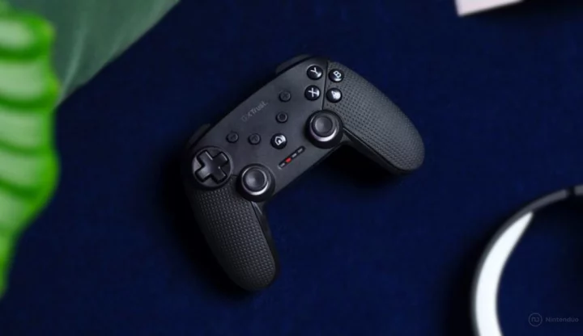

Reseña del Mando GXT 542 Muta de Trust, ¿merece la pena en Switch?
La marca Trust es un nombre que suele venir a la mente cuando pensamos en accesorios para consolas y PC. En las últimas semanas, hemos tenido la oportunidad de probar uno de sus productos diseñados para jugadores que buscan una alternativa al Pro Controller de Nintendo Switch. Sí, hemos evaluado el mando inalámbrico GXT 542 Muta de Trust en Nintendo Switch, y en esta reseña te ofreceremos nuestra opinión sobre si realmente vale la pena.

La marca Trust es un nombre que suele venir a la mente cuando pensamos en accesorios para consolas y PC. En las últimas semanas, hemos tenido la oportunidad de probar uno de sus productos diseñados para jugadores que buscan una alternativa al Pro Controller de Nintendo Switch. Sí, hemos evaluado el mando inalámbrico GXT 542 Muta de Trust en Nintendo Switch, y en esta reseña te ofreceremos nuestra opinión sobre si realmente vale la pena.